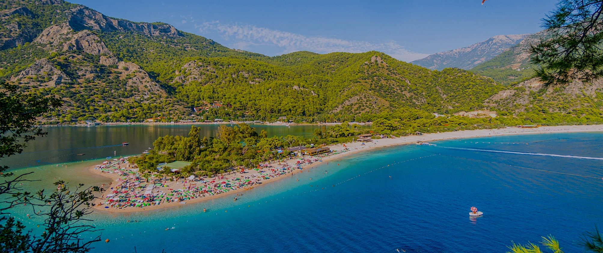

Muğla'da Gezilecek Yerler:
Muğla, Türkiye'nin Ege Bölgesi'nde bulunan doğal güzellikleri, tarihi dokusu ve turistik mekanlarıyla oldukça popüler bir şehridir.Muğla'da bulunan Bodrum, Marmaris, Fethiye, Datça gibi turistik merkezler, hem yerli hem de yabancı turistlerin ilgisini çeker. Bu bölgelerdeki masmavi denizleri, muhteşem plajları, antik kentleri ve doğal güzellikleri keşfetmek için idealdir. Ayrıca Muğla'nın yöresel lezzetleri ve kültürel etkinlikleri de ziyaretçilere unutulmaz bir deneyim sunar.
- Datça
- Fethiye
- Dalyan
- Marmaris Kalesi ve Marina
- Bodrum Kalesi
- Gökova Körfezi
Datça, Türkiye'nin Muğla iline bağlı bir ilçe ve aynı zamanda Datça Yarımadası'nın en önemli merkezlerinden biridir. Ege ve Akdeniz'in buluştuğu noktada yer alan Datça, doğal güzellikleri, berrak denizi, masmavi koyları ve tarihi dokusuyla ünlüdür. Antik dönemlerden günümüze kadar pek çok medeniyete ev sahipliği yapmış olan Datça, bu zengin tarihi mirasıyla da dikkat çeker. Özellikle Knidos Antik Kenti, Datça'nın en önemli tarihi ve turistik yerlerindendir. Datça aynı zamanda sakin ve huzurlu atmosferiyle de bilinir, doğal güzellikleri arasında yer alan İngiliz Limanı, Palamutbükü, Ovabükü gibi koylar, tatilcilerin ve doğa severlerin ilgisini çeker.
Fethiye, Türkiye'nin Muğla iline bağlı bir ilçe ve turistik bir merkezdir. Muhteşem doğal güzellikleri, berrak denizi, tarihi ve kültürel mirasıyla ünlüdür. Ölüdeniz, dünyaca ünlü bir plajı ve yamaç paraşütü için popüler bir merkezdir. Ayrıca, Likya Kaya Mezarları, Fethiye'nin tarihi ve arkeolojik zenginliklerinden biridir. Fethiye'nin diğer önemli turistik noktaları arasında Kelebekler Vadisi, Saklıkent Kanyonu, Kabak Koyu ve Kayaköy bulunmaktadır. Fethiye, sakin koyları, eşsiz doğal güzellikleri ve zengin tarih mirasıyla ziyaretçilerine unutulmaz bir tatil deneyimi sunar.
Dalyan, Türkiye'nin Muğla iline bağlı bir ilçe ve aynı zamanda bir kasabadır. Köyü ve bölgesi doğal güzellikleri, tarihi kalıntıları ve biyo-çeşitliliğiyle ünlüdür. Dalyan Nehri, bölgede önemli bir doğal özelliktir ve tekne turlarıyla ziyaret edilebilir. Tekne turları sırasında, Dalyan'daki kral mezarlarını ve Kumluca Plajı'na ulaşan İztuzu Plajı'nı görmek mümkündür. Dalyan ayrıca caretta carettaların yumurtlama alanlarından biridir ve bu nedenle çevre koruma konusunda hassas bir bölgedir.
Marmaris Kalesi, Marmaris'in tarihi sembollerinden biridir. Osmanlı döneminde inşa edilmiş olan kale, denizcilik tarihi ve savunma stratejileriyle ilgili sergilere ev sahipliği yapar. Marina ise modern tesislere sahip, popüler bir turistik limandır.
Bodrum Kalesi, Türkiye'nin Muğla iline bağlı Bodrum ilçesinde bulunan tarihi bir kaledir. Antik çağlarda Halikarnassos olarak bilinen Bodrum'un simgelerinden biridir. MÖ 15. yüzyılda, Rodos Şövalyeleri tarafından inşa edilmiştir. Daha sonra Osmanlı İmparatorluğu tarafından kullanılmıştır. Kale, Bodrum Kalesi Müzesi'ne ev sahipliği yapar ve içerisinde çeşitli tarihî eserler, heykeller, sikkeler ve amforalar sergilenir. Ayrıca, kaleden Bodrum Koyu'na ve Ege Denizi'ne muhteşem bir manzara da izlenebilir. Bodrum Kalesi, hem tarih hem de mimari açıdan önemli bir yapı olup, bölgenin turistik cazibe merkezlerinden biridir.
Gökova Körfezi, Türkiye'nin batı kıyılarında bulunan Ege Denizi'nde yer alan bir körfezdir. Muğla ilinin kuzeybatısında, Dalaman ve Bodrum arasında konumlanmıştır. Muhteşem doğal güzelliklere sahip olan Gökova Körfezi, masmavi denizi, sakin koyları ve doğal çevresiyle ünlüdür. Ayrıca, bölgedeki çam ormanları ve dağlık araziler, ziyaretçilere eşsiz bir doğa deneyimi sunar. Körfezin suları ayrıca yelken sporu ve deniz turizmi için de popüler bir destinasyondur. Gökova Körfezi, turistlerin yanı sıra doğa severler ve denizcilik tutkunları için de önemli bir cazibe merkezidir.